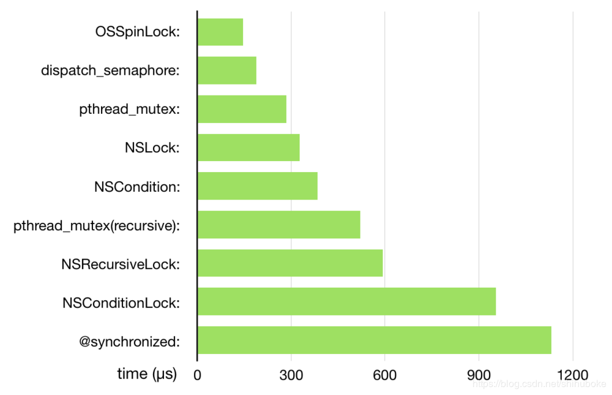

我们在使用多线程的时候多个线程可能会访问同一块资源，这样就很容易引发数据错乱和数据安全等问题，这时候就需要我们保证每次只有一个线程访问这一块资源，锁 应运而生。
不同锁的效率比较: 
自旋锁的实现原理比较简单，就是死循环。当a线程获得锁以后，b线程想要获取锁就需要等待a线程释放锁。在没有获得锁的期间，b线程会一直处于忙等的状态。如果a线程在临界区的执行时间过长，则b线程会消耗大量的cpu时间，不太划算。所以，自旋锁用在临界区执行时间比较短的环境性能会很高。
注:苹果爸爸已经在iOS10.0以后废弃了这种锁机制,使用os_unfair_lock 替换, 顾名思义能够保证不同优先级的线程申请锁的时候不会发生优先级反转问题.
注:解决不同优先级的线程申请锁的时候不会发生优先级反转问题.不过相对于 OSSpinLock , os_unfair_lock性能方面减弱了许多.
注: dispatch_semaphore 其他两个功能
1.还可以起到阻塞线程的作用.
2.可以实现定时器功能,这里不做过多介绍.
pthread_mutex表示互斥锁，和信号量的实现原理类似，也是阻塞线程并进入睡眠，需要进行上下文切换。
pthread_mutexattr_t attr;
pthread_mutexattr_init(&attr);
pthread_mutexattr_settype(&attr, PTHREAD_MUTEX_NORMAL);
pthread_mutex_t lock;
pthread_mutex_init(&lock, &attr); //设置属性
pthread_mutex_lock(&lock); //上锁
//需要执行的代码
pthread_mutex_unlock(&lock); //解锁
NSLock在内部封装了一个 pthread_mutex，属性为 PTHREAD_MUTEX_ERRORCHECK。
NSLock *lock = [NSLock new];
[lock lock];
//需要执行的代码
[lock unlock];
NSCondition封装了一个互斥锁和条件变量。互斥锁保证线程安全，条件变量保证执行顺序。
NSCondition *lock = [NSCondition new];
[lock lock];
//需要执行的代码
[lock unlock];
pthread_mutex锁的一种，属于递归锁。一般一个线程只能申请一把锁，但是，如果是递归锁，则可以申请很多把锁，只要上锁和解锁的操作数量就不会报错。
pthread_mutexattr_t attr;
pthread_mutexattr_init(&attr);
pthread_mutexattr_settype(&attr, PTHREAD_MUTEX_RECURSIVE);
pthread_mutex_t lock;
pthread_mutex_init(&lock, &attr); //设置属性
pthread_mutex_lock(&lock); //上锁
//需要执行的代码
pthread_mutex_unlock(&lock); //解锁
注: 递归锁可以被同一线程多次请求，而不会引起死锁。
即在同一线程中在未解锁之前还可以上锁, 执行锁中的代码。
这主要是用在循环或递归操作中。
递归锁，pthread_mutex(recursive)的封装。
NSRecursiveLock *lock = [NSRecursiveLock new];
[lock lock];
//需要执行的代码
[lock unlock];
NSConditionLock借助 NSCondition 来实现，本质是生产者-消费者模型。
NSConditionLock *lock = [NSConditionLock new];
[lock lock];
//需要执行的代码
[lock unlock];
一个对象层面的锁，锁住了整个对象，底层使用了互斥递归锁来实现。
NSObject *object = [NSObject new];
@synchronized(object) {
//需要执行的代码
}
@synchronized互斥锁：当上一个线程的任务没有执行完毕的时候（被锁住），那么下一个线程会进入睡眠状态等待任务执行完毕，当上一个线程的任务执行完毕，下一个线程会自动唤醒然后执行任务。
应用场景: @synchronized：适用线程不多，任务量不大的多线程加锁
注意点：
1.如果多线程访问同一个资源，那么必须使用同一把锁才能锁住
2.在开发中，尽量不要加锁，能在服务端做尽量在服务端做，如果必须要加锁，一定要记住，锁的范围不能太大，哪里有安全隐患就加在哪里。
3.技巧：因为必须使用同一把锁，开发中如果需要加锁，直接使用 self 即可。
@synchronized(self) {//加锁
}//解锁
.
atomic 自旋锁：当上一个线程的任务没有执行完毕的时候（被锁住），那么下一个线程会一直等待（不会睡眠），当上一个线程的任务执行完毕，下一个线程会立即执行。
atomic 自旋锁应用场景：比较适合做一些不耗时的操作
注意点:
只会给 setter 方法加锁，并不会给getter方法加锁。
.
NSLock：其实NSLock并没有想象中的那么差，不知道大家为什么不推荐使用
.
dispatch_semaphore_t：使用信号来做加锁，性能提升显著
NSCondition：使用其做多线程之间的通信调用不是线程安全的
.
NSConditionLock：单纯加锁性能非常低，比NSLock低很多，但是可以用来做多线程处理不同任务的通信调用
NSRecursiveLock：递归锁的性能出奇的高，但是只能作为递归使用,所以限制了使用场景
.
NSDistributedLock：因为是MAC开发的，就不讨论了
POSIX(pthread_mutex)：底层的api，复杂的多线程处理建议使用，并且可以封装自己的多线程
.
OSSpinLock：性能也非常高，可惜出现了线程问题
dispatch_barrier_async/dispatch_barrier_sync：测试中发现dispatch_barrier_sync比dispatch_barrier_async性能要高，真是大出意外